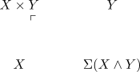
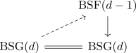
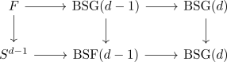
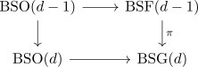
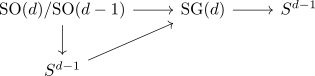
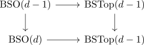
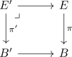

algebraic topology 4 - thom isomorphism for spherical fibrations
Aspects
2.1
- oriented spherical fibration between anima
- oriented pointed spherical fibration - todo ???
- oriented fibration and oriented homotopy aut
2.2
2.3
- infinity pushout and cofiber
- thom space of a terminal morphism as sphere
- pullback diagram induces map between thom spaces
- natural map from sphere to thom space
2.4
2.5
2.6
groups
- spherical fibration
- classification of fibrations with typical fibre F for anima
- pointed spherical fibration
- suspension homomorphism from G(d) to F(d)
- suspension homomorphism from SG(d) to SF(d)
- pointed fibration sequence
- pointed fibration with typical fiber F - todo
- classification of pointed fibrations with typical fiber F
- universal pointed fibration - todo
- section of the universal pointed fibration
- classification of pointed fibrations
todo ???
- classification of pointed oriented spherical fibrations
- classification of pointed spherical fibrations
- classification of spherical fibrations
- classification of oriented spherical fibrations
2.7
- pointed thom space of the suspension equivalent to thom space
- overview: group homomorphisms between O(d),GL_d, Top_0(d), F(d) and G(d)
- group homomorphism from O(d) to Homeo(S^d-1)
- group homomorphism from Top_0(d) to pointed Homeo(S^d)
2.8
2.9
- join functor on anima
- infinity smash product
- smash product of pointed anima spheres
- join of anima spheres as sphere
2.10
- overview: group homomorphisms between O(d),GL_d, Top_0(d), F(d) and G(d)
- inclusion of Top_0(d) into G(d)
- homotopy Aut space
2.11
2.13
- cofiber of the projection in Anima
- suspension of the join and smash product commute for spherical fibrations
2.14

2.15
- suspension of the nonempty product
- pointed thom space commutes with smash product
- unpointed thom space of the join as smash proudct
2.16
- pointed thom space of the sum with a trivial spherical fibration
- thom space of the sum with a trivial spherical fibration_
- thom space of a trivial fibration
2.17
2.18
2.19
2.20
Let $\pi: E \rightarrow B$ be a an oriented spherical fibration between anima with thom class of an oriented spherical fibration $u(\pi)$. and $f: B' \rightarrow B$. with induced pullback $\pi': E' \rightarrow B'$ pullback of $\pi$ along $f$, call the induced map
2.21
2.22
- characteristic class of a topological group and abelian group
- euler class as characteristic class
- euler class as characteristic class for oriented spherical fibrations
2.23
- euler class of an oriented vector bundle
- F2 euler class of a vector bundle
- forgetful functor from real vector bundles to spherical fibrations
- forgetful functor from oriented real vector bundles to oriented spherical fibrations
- forgetful functor from oriented pointed R^d fibre bundles to spherical fibrations
- forgetful functor from pointed R^d fibre bundles to spherical fibrations_
2.24
2.25
- composition of BF(d-1) to BG(d) euler class vanishes
- composition of BSF(d-1) to BSG(d) with euler class vanishes
- euler class as obstruction for destabilization
Consider again $\mathrm{BSF}(d-1) \rightarrow \mathrm{BSg}(d)$ This is a simple map, since $\pi_1(\mathrm{BSF}(d-1)) = 0$.
The map is Its fiber is given by $S^{d-1}$, forgetful map from BF(d) to BG(d+1) as d-1 connected
then we may use fundamental theorem of obstruction theory for simple maps

to consdier
By reasons similar to fundamental application of obstruction theory we get an obstruction class $\theta \in H^d(\mathrm{BSG}(d),\mathbb{Z})$.
2.26
2.27
Let $F = \mathrm{fib(\Sigma: BSG(d-1)) \rightarrow \mathrm{BSG}(d-1)}$ be the fiber of the <stabilization> Then

furthermore
The diagram

is an pullback
proof
The diagram
\begin{displaymath}
\begin{tikzcd}
S^{d-1} \rar \dar & S^{d-1}\dar \\ \\
\mathrm{BSO}(d-1) \rar \dar & \mathrm{BSF}(d-1) \dar{\pi} \\
\mathrm{BSO}(d) \rar & \mathrm{BSG}(d)
\end{tikzcd}
\end{displaymath}is a pullback

- euler class as obstruction class for
- primary obstruction class_
- euler class as primary obstruction class for real vector bundles
2.28
It turns out that

is roughly $2d-2$ cartesian
2.29
2.30
2.31
2.32
2.33
- Let $f: B' \rightarrow B$, $\pi: E \rightarrow B$ and $\pi': E' \rightarrow B'$ be
2.34
Stuff- to sort
- oriented fibration between anima
- <anima straightening>
Let $\pi: E \rightarrow B$ be a homotopy fibration with typical fibre $S^{d-1}$ and $B$ connected
- homotopy Aut space
- oriented homotopy Aut of an anima sphere
- homotopy Aut of an anima
- oriented fibration and oriented homotopy aut
- F(d), SF(d), G(d), SG(d)
- Thom Space
- Thom space as disk bundle modulo sphere bundle
- pointed Thom space
- pointed thom space of the suspension equivalent to thom space
- Anima over a kan complex as functor category
Let $\pi: B \rightarrow BG(d)$ be a <pointed spherical fibration> where $BG(d) \subseteq \mathrm{An}_*$ via <>
Given a pullback

of <spherical fibrations of rank d-1> we get an induced map